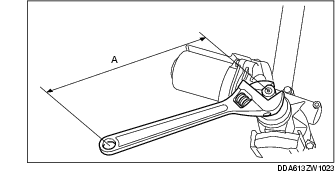

STEERING GEAR AND LINKAGE ADJUSTMENT
id061300282400
1. Remove the locknut using the SST.
2. Apply sealant to the threads of the adjustment cover.
3. Tighten the adjusting cover to 19.6 Nm {2.00 kgf/m, 14.4 ft/lbf} three times, then return it 23°
4. Secure the adjusting cover so that it does not rotate and tighten the locknut using the SST.
Tightening torque
39-49 N·m {4.0-4.9 kgf·cm, 29-36 in·lbf}
5. Measure the rotation torque of the pinion shaft using a crescent wrench and pull scale.
-
1. Install the crescent wrench to the steering gear.
-
2. Measure the length from the pinion shaft center to the crescent wrench end (application point of pull scale) as shown in the figure. This is dimension A.

-
3. The rotation torque of the pinion shaft can be calculated using the following formula:
-
Measured value using pull scale (N {kgf/lbf}) × length A (m {cm, in})
-
Rotation torque of the pinion shaft (Nm {kgf/cm, in/lbf})
-
4. Verify that the measured value is within the specification.
-
• If not within the specification, repeat Steps 1 to 5.
Rotation torque of the pinion shaft (Nm {kgf/cm, in/lbf})
-
1.4-1.8 N·m {15-18 kgf·cm, 13-15 in·lbf}